Once the Inverse Matrix has been computed, you can apply it to EEG or Frequency data, and obtain some .ris files (results of inverse solution). These .ris files can subsequently be used for display, for statistics, or even converted to volumes for fMRI comparison.
Here is a highly recommended article about practical use of the inverse solutions:
"EEG Source Imaging: A Practical Review of the Analysis Steps", C.M. Michel, D. Brunet, Front. Neurol., 04 April 2019
Checking the files consistency
Called from the Tools | Inverse Solutions | Computing Results of Inverse Solutions menu, the following dialog appears:
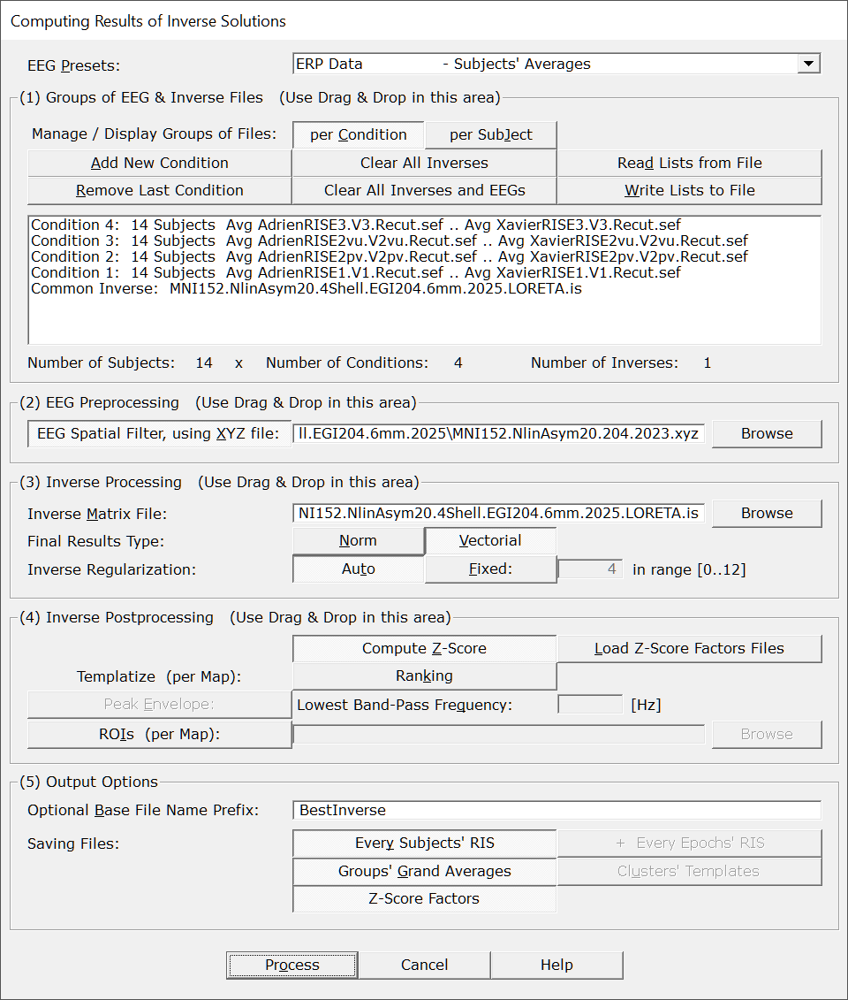
|
Presets |
You can quickly set the most important parameters according to some predefined scenarios. You are then free to fine-tune any parameter, of course. |
|
(1) Groups of EEG Files |
|
| One Group of Files Contains: |
Use this preset to specify how Cartool has to understand each group of files that you give it:
You can still change the preset even after the files have been dropped in. |
|
Add New Group of Files |
Enter a new group EEG or Frequency files. Cartool will check that the new group of files is compatible with the existing ones, and will complain if needed... |
|
Remove Last Group |
Does what it says. |
|
Clear All Groups |
Clear out all the groups at once. |
|
Read Lists from File |
You can direclty retrieve the lists of groups previously (see below). See also Drag & Drop. |
|
Write Lists to File |
You can save the lists of current groups into a file, in case you want to re-use them (much recommended!). See the file formats available. |
|
(List of current groups of files) |
For your entertainment and great pleasure, you can here contemplate your life and a summary of all the groups of files you already added to this sub-box. |
|
Number of Subjects: Number of conditions: |
A summary of what Cartool understands in terms of subjects and conditions. |
|
(2) EEG Preprocessing |
|
|
EEG Spatial Filter, using XYZ file: |
If this option is selected, then the EEG data will be preprocessed with a Spatial Filter. This filter takes care of any remaining outliers, while also smoothing out the data. This really improves the Results of Inverse Solution, as outliers are definitely a no-no. Cartool will check that electrodes coordinates is compatible with the other files, and will complain if needed... |
|
(3) Inverse Processing |
|
|
Inverse Matrix File: |
This one input is mandatory, so give one of the inverse matrix generated here. Cartool will check that inverse matrix is compatible with the other files, and will complain if needed... |
|
The type of results to be actually saved. Inverse solutions produces dipoles for each solution points, each dipole therefor coding for both orientation and power. You can specify what to do with these vecotrial information. |
|
|
Norm |
Only the norm of each dipole will be saved. This is what you need 99% of the time. |
|
Vectorial |
The complete vector of each dipole will be saved. Not recommended unless you know what you are doing. Also, it takes more space on the disk. |
|
Inverse Regularization: |
Regularization is a kind of smoothing that accounts for noise in the data. Apply more regularization for noisier data, and less for cleaner data. Don't over-do regularization, as makes the localization more blurry and less precise. |
|
Auto |
Data is tested against all available regularizations. Then the optimal one is picked: the lowest regularization factor that doesn't change much the results. This is the recommended option. |
|
Fixed |
Or you can set a specific regularization factor, ranging from 0 (none) to 12 (max), 4 being the default value. |
|
(4) Inverse Postprocessing |
|
|
This will normalize the time course of each solution point by its background activity (noise). The real activities, the highest values, are not taken into account in the formula, as this would be counter-productive by 'neutralizing' them. This option is highly recommened for optimal results! |
|
|
Compute Z-Score |
Compute the Z-Scores every time. |
|
Load Z-Score factors files |
Try to reload the Z-Score factors from existing files. Files should match the inverse name and regularization, and of course, subjects' names. |
|
Apply some sort of normalization to output only templates of activations, stripping the power component out. |
|
|
Ranking |
Each sample's results will be ranked, for each sample independently. Hence values will be between (0..1] |
|
Envelope (Gap Bridging, in Time): |
Apply an Envelope method ("Gap Bridging") to the norms of results. This goes faster than Hilbert transform, and gives more or less consistent results. |
|
Lowest Band-Pass Frequency: |
Provide here the lowest frequency to account for for the envelope. |
|
ROIs (per Map): |
If the option is selected, you have to provide the ROIs file that matches the current inverse matrix. This is useful to reduce the results'size. It is of course applied for each sample at a time. ROIs results are computed using a Median, not a Mean, of all points belonging to a given region. Cartool will check that ROIs are compatible with the other files, and will complain if needed... |
|
(4) Output Options |
|
|
Optional Base File Name Prefix: |
Specify here an optional prefix for all the output file names. |
|
Saving Files: |
A few options to tailor how you want to overflow your disk with files... |
|
Every Subjects' RIS |
Each input file will have a one-to-one corresponding output .ris file. |
|
+ Every Epochs' RIS |
All Epochs will have a corresponding .ris file, which means, that could be huge. |
|
Computing Grand Averages |
This option, usually associated with ERP experiments, will gracefully compute the average .ris of each condition. It will work correctly only if all the files have exactly the same lengths, across all conditions and all subjects. |
|
Computing Clusters Centroids |
This option is tailored for clusters of data (from the Fitting f.ex.). It will compute the mean template across each cluster of data. This might be even the only results of interest in that specific case... |
|
Z-Score Factors |
Save the Z-Score factors to file. This could be handy in case of re-computation by just reloading them - these factors take a bit of time to compute... |
|
Process |
Runs the computation. This button remains disabled until all the parameter dialogs have received enough (and consistent) informations. |
|
Cancel |
Quit the dialog. |
|
Help |
Launch the Help to the right page (should be here...). |
Computing RIS - Technical points & hints
Checking the files consistency
Cartool will run your input files through an extensive set of consistency rules. The purpose being first to avoid crashes, and second to check that you haven't picked the wrong files.
The main consistency checks are the following:
See here a simplified view of how files are checked, without ROIs:
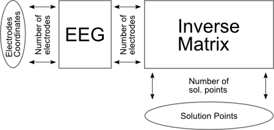
And here the same view, but with ROIs:
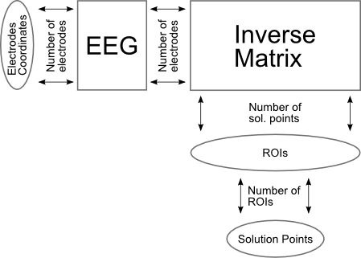
Applying the Spatial filter is strongly recommended before computing the results of inverse solutions if there remains any transient artifacts, and/or data is even slightly noisy. Both degrade the quality of the localization, or can even make it totally erroneous.
The exact specification of the Spatial Filter is here.
The Spatial filter is a non-linear filter that will get rid of local outliers, while also smoothing the overall map. It will, however, retain the global aspect of the map's topography. See here an example of before (A) and after (B) the Spatial filter, on the tracks (left) then on the maps (middle and right):
Background normalization via custom Z-Score
Due to various reasons, like an incorrect head geometry, or approximate skull conductivity, some solution points will show more power than others. Moreover, these power variations depend on each subject. Therefor, a normalization step can only be applied after the results of inverse have been computed, not before.
Before stepping into the formula, it is important to get the underlying idea right. This normalization step will be based solely on the background / noise activity. The higher values are not used at all, so to not bias the correction.
A custom Z-Score has been tailored to deal with the norm of dipoles. The idea is to convert from a Chi-square distribution to a Normal distribution (Equ. 1 and 2), then to a Z-Score (Equ. 3). Finally data are offsetted by 3 standard deviations so as to remain positive (Equ. 6). The tricky implementation part is all about estimating the Modes and (left part of) Median of Absolute Deviation:
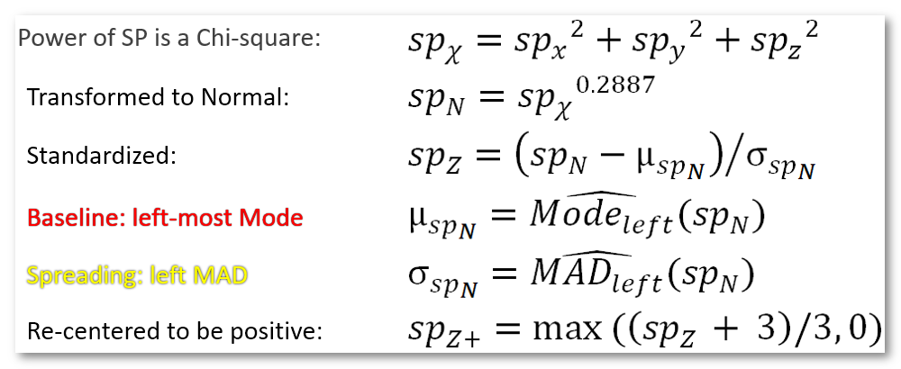
The resulting new solution points values remain positive, as to remain consistent with the original data, but now with the noise having a Normal distribution centered on 1 (and a SD of 1/3).
See here an example of before (left picture) and after (right picture) standardization, showing the color plot of the histogram (horizontal acis) of each solution point (vertical axis):
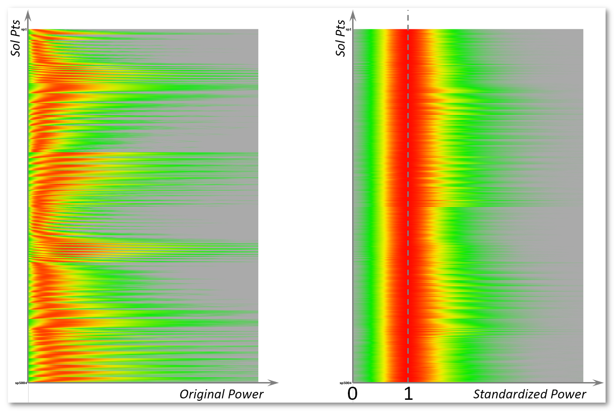
If one is interested on only having a template of all active brains regions, and does not care about power in the results, then the Templatize options come in handy. This is typically used for Micro-tates analysis f.ex.
Ranking will rank, and normalize to 1, every solution points' results, for each sample / time point independently.
An additional Thresholding is available to clear-out the lowest 90% of the data, hence keeping the top 10%. Indeed, one never looks at the lowest responses at all, it is mostly noise and/or some possible inverse artefacts. It could be wise to not account for these!
Here is an example of the effect of templatizing the results. Top data are regulard ERP results, which power vary time. Corresponding inverse on the right is kind of blurry. Bottom data is ranked + thresholded results, max values are 1. Corresponding inverse are less blurry, but power information is gone.
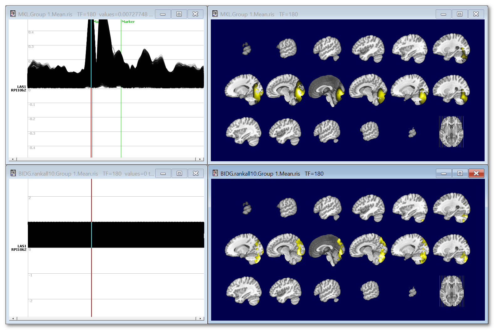
Noteworthy is the fact that you can input frequency files, and hence compute the results of inverse solution at different frequencies.
Here are the necessary steps to achieve that:
See here, for example, the results at 4 different frequencies, and for all solution points (no ROIs):
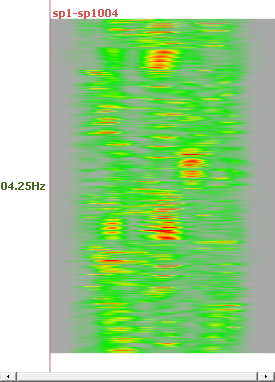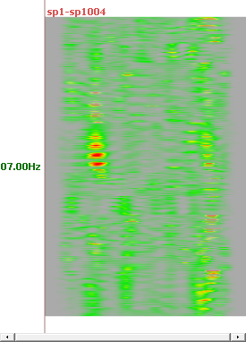
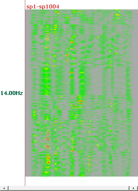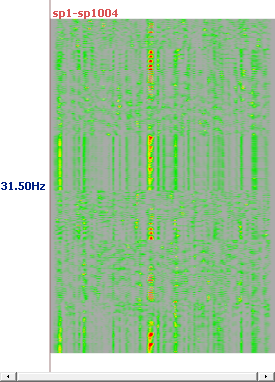
Here is an example of ERP, top is the EEG on 204 electrodes, bottom the transformed ris file. We can note that the EEG data are of course signed data, more or less in the range -4..4, while the ris data are indeed centered around 1:
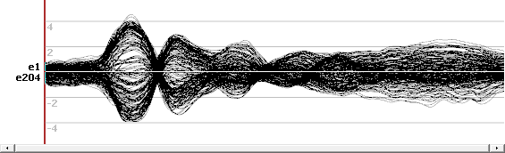
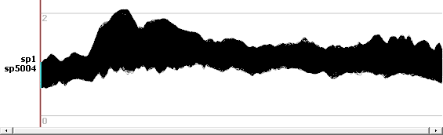
And here is an example of a map and its corresponding inverse display:
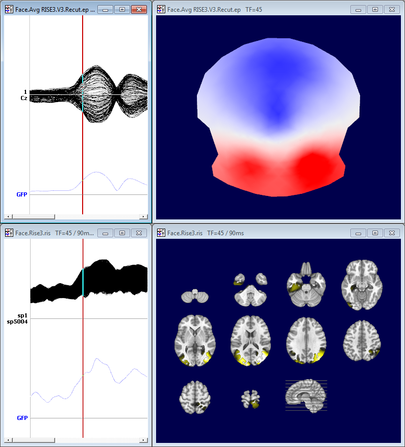